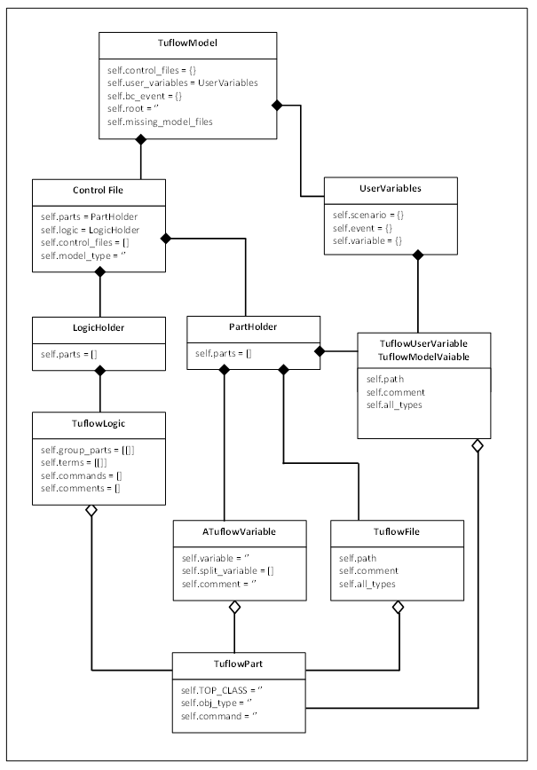

Adding TuflowPart’s¶
If you are not yet familiar with TuflowModel, ControlFile and TuflowPart you should look through those sections. They will give a reasonable overview of how the different components of the tuflow package interact and the data structures involved. Once you understand that the process of adding (or removing) TuflowPart’s from the model will be a lot easier to get.
Overview¶
There are a lot of ways that you could add and remove different components from a TuflowModel instance. Python, without the provision of private variables, gives a lot of power to the end user of an API. However if you don’t follow certain, simple, steps when adding or removing components from a loaded TuflowModel you will almost certainly end up with something that doesn’t make a lot of sense (or crashes).
It helps to do a quick review of the main components:
- TuflowModel
- control_files
- ControlFile
- PartHolder
- LogicHolder
TuflowPart
TuflowModel is the main ‘glue’ that pulls all of the other components together. ControlFile is the main container for the data. It stores all of the parts of control files in two iterator classes: PartHolder and LogicHolder. The actual data is all stored in classes that extend the TuflowPart interface.
It all looks a little bit like this slightly simplified diagram:
How it all works¶
Dealing with control files¶
Now we need to consider a bit about how Tuflow control files are setup and compare that to what the SHIP library does.
In Tuflow you have a .tcf file as the main entry point for a model. Perhaps something like this:
# this might be called myrun.tcf
# ... some other commands above
Set Variable MyTcfVariable == 1
GIS Format == SHP
Read Materials File == ..\model\materials.csv
Geometry Control File == ..\model\tgcfile.tgc
BC ControlFile == ..\model\tbcfile.tbc
# Some other command below ...
And then tgcfile.tgc might look something like this:
Read GIS Location == gis\2d_loc_L.shp
Grid Size (X,Y) == 5000,4500
Cell Size == 2
Set Code == 0
Read GIS Code == gis\2d_code_R.shp
Read GIS Z Line == gis\2d_zln_L.shp | gis\2d_zln_P.shp
When loading the model with the FileLoader it will return a TuflowModel setup like this:
tuflow = loader.loadFile(tcf_path)
# prints ['TCF', 'TGC', 'TBC']
print tuflow.control_files.keys()
And the ‘TCF’ ControlFile’s PartHolder will have a reference to the tgcfile.tgc ModelFile instance and the tbcfile.tbc ModelFileInstance. The ‘TGC’ ControlFile will have a reference to the tgcfile.tgc ModelFile in it’s control_files list.
Bearing this in mind, what will happen if we delete the tgcfile.tgc TuflowPart (ModelFile) from the ‘TCF’ ControlFile?
It will not longer be in the list of TuflowPart’s in the ‘TCF’ PartHolder. However it will still be in the ‘TGC’ ControlFile’s control_files list and all of the components of the tgcfile.tgc will still be in the ‘TGC’ ControlFile’s PartHolder! So if you were to just remove the tgcfile.tgc part from the ‘TCF’ ControlFile it would only affect that one object. If you use the SHIP methods for this stuff it makes sure that everything gets updated and kept in sync.
Side Note You don’t actually need to delete an item to hide from most of the querying methods and the write and getPrintableContents methods. You can simply set the ‘active’ member of any TuflowPart to False. This part will then notify all the other TuflowPart’s that are beneath them (and they the same) and they will all have active set to False as well. This impact of this is that you effectively remove a part and anything under it, but still have access to it if you need. You can also turn a part off, do something and then reactivate it.
Dealing with logic¶
Similar considerations are needed for TuflowLogic. If we have the following section in tgcfile.tgc:
IF SCENARIO == scen1 | scen1more
Set Cell Size == 10
Read GIS Whatevs == gis\2d_whatevs_P.shp
Read File == test_trd1.trd
ELSE
Set Cell Size == 5
Read File == test_trd3.trd ! trd3
END IF
Set Mat == 5
- The ‘TGC’ ControlFile PartHolder would store it all in this order:
- Set Cell Size == 10
- Read GIS Whatevs == gis2d_whatevs_P.shp
- Read File == test_trd1.trd
- Set Cell Size == 5
- Read File == test_trd3.trd ! trd3
- Set Mat == 5
And it would store on IfLogic object in the Logic holder with two clauses (If Scenario and Else). All pretty obvious so far.
Now what happens if you want to remove ‘Read GIS Whatevs’ from the If logic? You could do this:
# DON'T DO THIS!
# Say 'tgc' is the 'TGC' ControlFile that we grabbed from a TuflowModel
logic = tgc.logic[0]
# Find the part we want and remove it
for i, part in enumerate(logic.parts):
if part.command.lower() == 'read gis whatevs':
gindex = logic.getGroup(part.hash)
pindex = logic.group_parts[gindex].index(part.hash)
del logic.group_parts[gindex][pindex]
del logic.parts[i]
break
Apart from being a little verbose and awkward it’s also not very effective. If you went to save the tgcfile.tgc now you would get this:
IF SCENARIO == scen1 | scen1more
Set Cell Size == 10
Read GIS Whatevs == gis\2d_whatevs_P.shp # <<< Here's where it gets weird
END IF # <<<
IF SCENARIO == scen1 | scen1more # <<<
Read File == test_trd1.trd
ELSE
Set Cell Size == 5
Read File == test_trd3.trd ! trd3
END IF
Set Mat == 5
The nuances of why this happens is out of the scope of this section, but it’s basically because the IfLogic thinks that the TuflowPart has been removed from it’s scope, but neither the ControlFile, PartHolder or TuflowPart itself know that!
What you should do¶
Logic continued¶
So what should happen? You can do this using the TuflowLogic removePart method:
logic = tgc.logic[0]
for part in logic.parts:
if part.command.lower() == 'read gis whatevs':
logic.removePart(part)
break
When TuflowLogic objects are created they get given a callback function that is called when TuflowParts are added or removed from them. This lets the ControlFile know that it’s happend and, following the setup above, it will:
- Remove all references of the TuflowPart from the IfLogic object.
- Move the ‘Read GIS Whatevs’ line to immediately above the ‘Set MAT’ line in the PartHolder.
- Remove the associates.logic reference pointing to the IfLogic from the TUflowPart. And if the logic is embedded in another TuflowLogic it will set the associates.logic to that one instead. I.e. it will only move it out one level at a time. If you want it completely out you will have to remove it from multiple embedded TuflowLogic’s.
So now it looks like this, which is hopefully what you expected:
IF SCENARIO == scen1 | scen1more
Set Cell Size == 10
Read File == test_trd1.trd
ELSE
Set Cell Size == 5
Read File == test_trd3.trd ! trd3
END IF
Read GIS Whatevs == gis\2d_whatevs_P.shp # <<< Here it is now
Set Mat == 5
Adding non-ModelFile parts¶
We’ll deal with ModelFile types in a bit because they can be a little different depending on the circumstances.
It’s pretty simple to add TuflowPart’s to a control file really. You just need to think a little about where you are trying to add it. PartHolder has three methods:
- add(filepart, kwargs): add a new TuflowPart. Takes some keyword args:
- after - the TuflowPart in the list to put it after.
- before - the TuflowPart in the list to put it before. Note that if neither ‘before’ or ‘after’ are given it will be appened to the end of the list.
- take_logic - bool value, whether to take the logic from the adjacent part. Defaults to True and to take the logic of the part below. If ‘before’ is given as a kwarg it will take the logic from that. If False and it’s placed in between two parts with the same logic clause it will be set to True (otherwise it would break the file setup).
move(filepart, kwargs): moves a TuflowPart to another part of the list. kwargs are the same as for add, but you must supply either a ‘before’ or ‘after’ part.
remove(filepart): removed the TuflowPart from the list. It will also return the removed part. Note it is usually better to call the deactivate method instead.
deactivate(filepart): sets the ‘active’ flag for this part to False. Essentially stops it from being used in anything, but keeps it in the list.
Adding ModelFile parts¶
So what about ModelFile and why are they different? Well, sometime they’re not. If you just want to change the .tgc file being pointed to by a .tcf and then write the updated .tcf file to disk, it doesn’t matter. Let’s revisit the previous .tcf example:
# this might be called myrun.tcf
# ... some other commands above
Set Variable MyTcfVariable == 1
GIS Format == SHP
Read Materials File == ..\model\materials.csv
Geometry Control File == ..\model\tgcfile.tgc
BC ControlFile == ..\model\tbcfile.tbc
# Some other command below ...
If you wanted to change the Geometry Control File to be tgcfile2.tgc you could just do this:
tcf = tuflow.control_files['TCF']
for part in tcf.parts:
if part.command.lower() == geometry control file:
part.filename = u"tgcfile2"
break
contents = tgc.getPrintableContents()
for c in contents:
print (c)
# The above will print...
# ... some other commands above
Read Materials File == ..\model\materials.csv
Geometry Control File == ..\model\tgcfile2.tgc
BC ControlFile == ..\model\tbcfile.tbc
# Some other command below ...
Problems come in when you might want to do something with the new control file. With the above approach all you do is change the name of a ModelFile (TUflowPart) instance. Now any other TuflowPart that has that ModelFile as a parent - in this example it will be all of the parts in the ‘TGC’ ControlFile. will have that new filename for their parent. This is possibly what you want? Or possibly not?
If you are changing the name to another existing .tgc file, but you want to amend it slightly you will want to load the contents into the ‘TGC’ ControlFile.
Or maybe you want to change the reference in the tcf, like above, but keep the reference to the original in the ‘TGC’ ControlFile? For many reasons you will probably want to do it a different way.
SIDENOTE The one occasion that you may just want to do it that way is actually probably quite a common reason. You load an existing .tgc file (or whatever) and you want to change a couple of gis files or variables and save it as a new .tgc file. In that case it is best to just make whatever changes and then change the filename variables, as above. This change will be replicated wherever it’s referenced and you can save it under the new name.
Other than the reason in SIDENOTE you will want to use either:
- the addModelFile method in TuflowModel.
- the addControlFile method in ControlFile.
Long story short, don’t use the addModelFile method in TuflowModel. You can if you want and it will work the same, but there is a clause in the TcfControlFile that will call that method anyway. It’s probably easier to remember to use the addControlFile method in ControlFile all of the time.
The only reason that it needs to the TuflowModel methods is because changes in the ‘TCF’ ControlFile will need to notify another ControlFile, say ‘TGC’ if the ModelFile being added will need to update contents in there.
- The addControlFile method takes three arguments:
- filepart(ModelFile): the new ModelFile to add.
- control(ControlFile): the newly loaded ControlFile to update the existing one with.
- adjacent_part(ModelFile): an existing ModelFile to use as an indicator of where the contents should go.
Example:
# import the tuflowloader
# I might change this so you can use the FileLoader, like the others, at
# some point, but this will always work
from ship.utils.fileloaders.tuflowloader import TuflowLoader
# Assume that we already have a loaded TuflowModel called tuflow
tcf = tuflow.control_files['TCF']
# Get the existing tgc file to use as a location reference in the tcf
# Remember that contains returns a list. We know there's only 1 so grab it
existing_tgc = tcf.contains(command='Geometry Control')[0]
# Create a new ModelFile with the TuflowFactory
# Note that tcf is given as the parent file
line = "Geometry Control File == ..\\model\\test_tgc2.tgc"
tgc_part = factory.TuflowFactory.getTuflowPart(line, tcf.mainfile)[0]
# Load the contents of the new tgc ModelFile
loader = TuflowLoader()
tgc_control = loader.loadControlFile(tgc_part)
# Add the ModelFile and ControlFile contents to the TuflowModel
tcf.addControlFile(tgc_part, tgc_control, after=existing_tgc)
# passes
assert(tgc_part in tuflow.control_files['TGC'].control_files)
# passes
test_part = tuflow.control_files['TGC'].contains(filename='shiptest_tgc2_v1_DTM_2m')
assert(len(test_part) == 1)
Creating TuflowPart’s¶
In order to add a new part to the model you will obviously need to create it first. There, as always it seems, are a couple of ways that you can do this. The first, and probably easiest, way is to copy an existing TuflowPart:
# assume we have an existing part called oldfile that is the kind of
# TuflwoPart we want, say a 'gis' type
# Performs a deep copy, so that we can change newfile and not effect oldfile.
# This method actually takes a coupe of kwargs:
# strip_unique (bool) - default True, and keep_logic(bool) - default False
newfile = myfile.copy()
# You can then change what you want
newfile.command = "Read GIS Z Line THIN"
newfile.filename = "2d_zln_wallorsomething_L"
# and then maybe we want to add it to the ControlFile after oldfile
tgc.parts.add(newfile, after=oldfile)
# Done. If you write the .tgc file it will be included.
Doing it this way you get a lot for free (but some of it you want to think about!). If you leave the defaults it will keep the associates.parent, but remove the .logic and .sibling_prev/next. It will also set the .comment to ‘’. If you want to keep the .logic you can set the keep_logic kwarg to True.
You can also create a new TuflowPart afresh. Either just call the contructor of one of them:
from ship.tuflow.tuflowfilepart import GisFile
# you have to add these
vars = {root=tuflow.root, command='Read GIS Z Line',
path='..\gis\2d zln_something_L.shp'}
# add logic and/or a comment if you want
vars['logic'] = logic # assume some TuflowLogic you retrieved before
vars['comment'] = 'A comment about the part I'm making'
# here 'parent' is a ModelFile instance representing the control file that
# the file will be put in
tfile = GisFile(parent, **vars)
Or if you prefer you can use one of the static methods in the TuflowFactory. If you do this you can either call the method that builds that specific part, or make life easier and just call getTuflowPart:
from ship.tuflow import tuflowfactory as tf
# again, we got a parent before
# This is the Tuflow command we are going to use
line = "Read GIS Z Line == 2d_zln_athing_L.shp ! I added this comment too"
# Like before you can add logic to kwargs if you want
args = {'logic': logic}
# either call a specific staticmethod
gisfile_list = tf.TuflowFactory.createGisType(line, parent, **args)
# or the classmethod
gisfile_list = tf.TuflowFactory.getTuflowPart(line, parent, logic=logic)
# Note both of the above return a list. In this case with only a single
# entry in it. If it was a piped command you would get multiple items
# in the list:
line = "Read GIS Z Line == 2d_zln_athing_L.shp | 2d_zln_athing_P.shp
new_gisfile_list = tf.TuflowFactory.createGisType(line, parent)
print (len(gisfile_list)) # prints '1'
print (len(new_gisfile_list)) # prints '2'